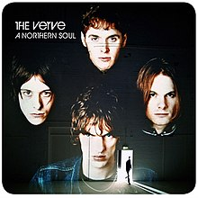
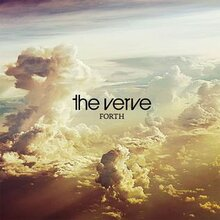
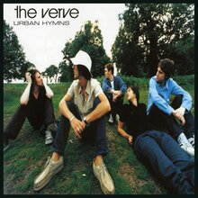
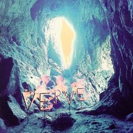

<!--2372036_Muhammad Sava Akbar Bastaman_B-->
<!DOCTYPE html>
<html lang="en">
<head>
    <meta charset="UTF-8">
    <meta name="viewport" content="width=device-width, initial-scale=1.0">
    <title>The Verve</title>
    <link rel="stylesheet" href="styl.css">
    <link rel="stylesheet" href="style3.css">
    <link rel="preconnect" href="https://fonts.googleapis.com">
    <link rel='stylesheet' id='theme-font-awesome-css' href='//use.fontawesome.com/releases/v5.14.0/css/all.css' type='text/css' media='all' />
    <link rel="stylesheet" href="https://cdnjs.cloudflare.com/ajax/libs/font-awesome/4.7.0/css/font-awesome.min.css">
    <link rel="preconnect" href="https://fonts.gstatic.com" crossorigin>
    <link href="https://fonts.googleapis.com/css2?family=Abril+Fatface&family=Amiri:ital@1&family=Girassol&family=Titan+One&display=swap" rel="stylesheet">
    <link href="https://cdn.jsdelivr.net/npm/bootstrap@5.3.2/dist/css/bootstrap.min.css" rel="stylesheet" integrity="sha384-T3c6CoIi6uLrA9TneNEoa7RxnatzjcDSCmG1MXxSR1GAsXEV/Dwwykc2MPK8M2HN" crossorigin="anonymous">
</head>
<aside>
    <header style="background-color: aqua;">
    </header>
    <nav>
        <nav class="navbar navbar-expand-lg bg-secondary">
        <div class="container-fluid">
            
          <a class="navbar-brand" style="color:black" style="font-family: 'Amiri', serif;"> &nbsp;Bastaman</a>
          <button class="navbar-toggler" type="button" data-bs-toggle="collapse" data-bs-target="#navbarSupportedContent" aria-controls="navbarSupportedContent" aria-expanded="false" aria-label="Toggle navigation">
            <span class="navbar-toggler-icon"></span>
          </button>
          <div class="collapse navbar-collapse" id="navbarSupportedContent">
            <ul class="navbar-nav me-auto mb-2 mb-lg-0">
              <li class="nav-item">
                <a class="nav-link active" style="color:red" class="warnafontnav" aria-current="page" href="index.html">Home</a>
              </li>
              <li class="nav-item">
                <a class="nav-link" style="color:white" class="warnafontnav" href="#spotify">Albums and Spotify</a>
            </ul>
          </div>
        </div>
        </nav>
    </nav>
      <!--Navbar-->
      <main>
        <aside>
            <h1>The Verve</h1><br><br>
            <p>
                The Verve (originally Verve) was an English alternative rock band. The band was formed in 1989 at Winstanley College, Wigan, Greater Manchester, England, by vocalist Richard Ashcroft, guitarist Nick McCabe, bassist Simon Jones and drummer Peter Salisbury. Simon Tong later became a member. The band originally split in 1995, but reunited in 1996 to great commercial success. They split once more in April 1999. The band reunited once more in June of 2007, but this reunion was short lived, despite the release of the album Forth in 2008, and the band split again in August 2009.<br><br>

Beginning with a psychedelic sound indebted to space rock and shoegazer music, by the mid-1990s the band had released several EPs and two acclaimed records. They also endured name and lineup changes, breakups, health problems, drug abuse and various lawsuits. The band’s commercial breakthrough was Urban Hymns and its single Bitter Sweet Symphony, which became a massive worldwide hit.<br><br>

Soon after this commercial peak, the band quit amid creative struggles within, and Ashcroft went onto a successful solo career. Tong briefly joined Blur as a replacement for Graham Coxon. It is rumored that Simon Jones did a studio album with Ari Pap of the Floor Monks called ‘Aint Nothing To It’ and was never released because they both had bigger projects going on at the time. Close family and friends assure us its a fabulous indie/rock/alternate album and they really wish it would have been released.<br><br>

The Verve were chosen to close the 2008 Glastonbury festival which they did with a set based on the classic 1997 album ‘Urban Hymns’.
</p>
              <br><br><iframe style="border-radius:12px" src="https://open.spotify.com/embed/artist/2cGwlqi3k18jFpUyTrsR84?utm_source=generator" width="100%" height="352" frameBorder="0" allowfullscreen="" allow="autoplay; clipboard-write; encrypted-media; fullscreen; picture-in-picture" loading="lazy"></iframe>
            </aside>
        <article>
            
            <div style="padding-left: 70px;"  class="sociallinks">
              <a href="https://www.facebook.com/theverve/" target="_BLANK"><i class="fab fa-facebook"></i></a>
              <a href="https://www.instagram.com/officialtheverve?igsh=Z3d2a2RncG1iNnZy" target="_BLANK"><i class="fab fa-instagram"></i></a>
              <a href="https://open.spotify.com/artist/2cGwlqi3k18jFpUyTrsR84?si=IW_PXGIhRCGVQmx_8K8YiA" target="_BLANK"><i class="fab fa-spotify"></i></a><br><br>
              </div>
              <h2 id="spotify">Popular Albums</h2>
              <div class="row">
                <div class="column">
              
              <figcaption>A Northern Soul<br>1995</figcaption>
            </div>
            <div class="column">
              
              <figcaption>Forth<br>2008</figcaption>
            </div>
            <div class="column">
              
              <figcaption>Urban Hymns<br>1997</figcaption>
            </div>
            <div class="column">
              
              <figcaption>A Storm In Heaven<br>1993</figcaption>
              </div>
              </div>
            </article>
    </main>
    <footer id="bgfooter">
      <p>&copy; 2024 My Music Website. All rights reserved.</p>
      <style>
      footer {
          background-image: url(https://cdn.pixabay.com/photo/2012/04/10/16/14/union-jack-26119_1280.png);
          background-repeat: no-repeat;
          margin: 30px;
          justify-content: center;
          position: sticky;   
          background-size: 100%;
          text-align: center;
          }
      </style>
  </footer>
</body>
</html>